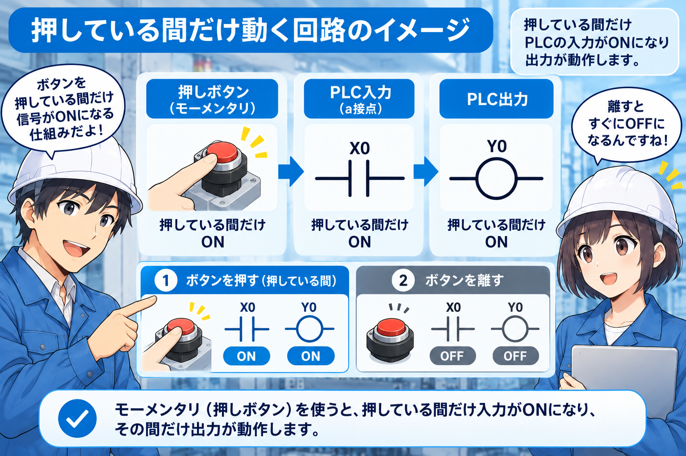
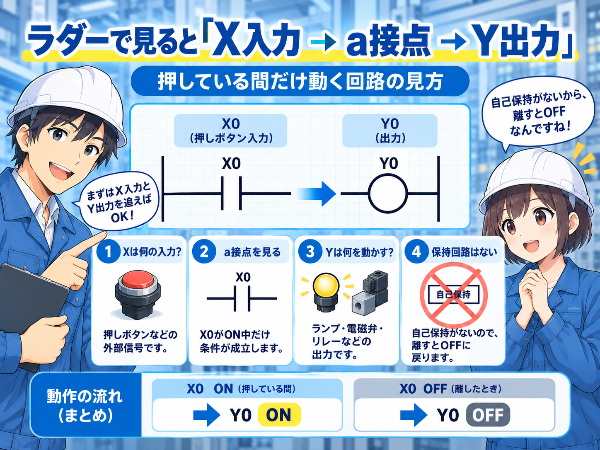
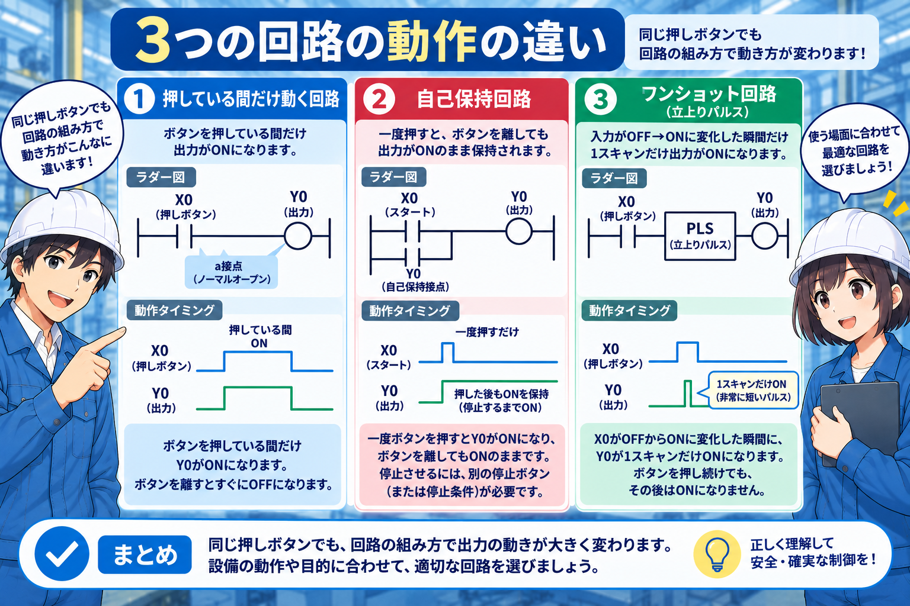
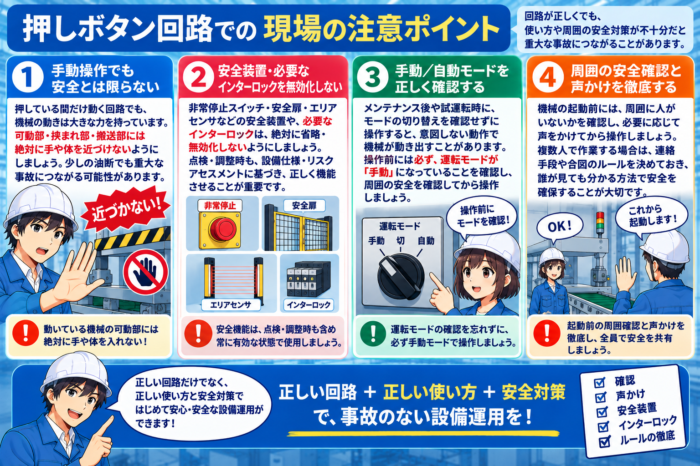

向いている人
- PLC・ラダー回路を学び始めた人
- 押しボタンで手動操作する回路を整理したい人
- 自己保持やワンショットとの違いを理解したい人
モーメンタリ形の押しボタンを押している間だけ入力条件が成立し、出力をONする基本回路です。X入力・a接点・Y出力の関係から、自己保持やワンショットとの違いまで整理します。
押している間だけ動く回路は、押しボタンなどの入力がONしている間だけ条件が成立し、その間だけ出力をONする回路です。ボタンを離して入力がOFFになると、出力もOFFへ戻ります。
PLCの基本ラダーで考えると、X入力のa接点を条件にしてY出力コイルを駆動するシンプルな形です。三菱電機の入門資料でも、入力接点の状態に応じて出力コイルがON/OFFする基本例が示されています。
自己保持接点やSET命令などで状態を保持していないため、入力がなくなれば出力も保持されません。この点が、起動ボタンを一度押せば運転を継続する自己保持回路との大きな違いです。
入力条件をそのまま出力条件として使うのが基本です。押し続ける時間が長ければ、その間は出力もONし続けます。
制御盤で使う押しボタンスイッチには、押している間だけ操作状態になるモーメンタリ形と、押すたびに状態を切り替えるオルタネイト形があります。
オムロンの現行押しボタンスイッチ資料では「Momentary」と「Alternate」が区別され、IDECの押しボタンスイッチでも動作方式として「モメンタリ」が明記されています。この記事では、基本的にモーメンタリ形の押しボタンを想定します。
ボタンがモーメンタリ形でも、PLC側で自己保持やSET処理を組めば出力を継続させることはできます。「ボタンの動作方式」と「プログラムで出力を保持するか」は別の話です。
この回路は、自動運転を継続させる用途よりも、作業者が操作している間だけ一時的に動かしたい場面で使いやすい基本回路です。
コンベアや機構を少しだけ動かし、ワーク位置や機械位置を合わせたい時に使います。
出力先が正しく動くかを短時間だけ確認したい場面で使います。
ランプ、ブザー、電磁弁などを操作中だけONしたい場合に使えます。
操作をやめた時点で出力条件も切れるため、保持させたくない手動操作に向いています。
手動モードでも、出力先がモーター・シリンダ・搬送機構なら設備は実際に動きます。手動操作用の回路であることと、安全が保証されることは別です。
基本の流れは、押しボタン → PLC入力X → ラダーのa接点 → 出力Yです。入力条件が成立している間だけ出力コイルが駆動されます。

モーメンタリ押しボタンの接点が切り替わり、PLC入力がONします。
PLCは外部入力の状態を取り込み、対応するXデバイスをONとして扱います。
ラダー上のX接点が導通条件となり、右側の出力命令まで条件がつながります。
出力条件が成立している間だけYがONし、入力条件が切れるとYもOFFになります。
GX Works3などでラダーを読む時は、まずどのX入力を見て、その接点条件でどのY出力を駆動しているかを追うと分かりやすくなります。

押しボタン、センサ、リミットスイッチなど、どの外部信号を受けているかを確認します。
基本例ではX入力のa接点を使い、XがONの時に条件を成立させます。
ランプ、リレー、電磁弁、接触器など、実際の出力先を確認します。
並列の自己保持接点やSET命令などがあれば、単純な「押している間だけ」の動作にはなりません。

先輩まずはX入力の接点がONしている間だけY出力がONする、一番シンプルな形として見ると理解しやすいよ。

後輩自己保持やSETが追加されると、ボタンを離しても動く別の回路になるんですね。
同じ押しボタン入力を使っていても、プログラム側で「入力中ずっとON」「入力後も保持」「変化した瞬間だけON」のどれを作るかで動作は大きく変わります。

| 回路 | 出力の動き | 代表的な用途 |
|---|---|---|
| 押している間だけ動く回路 | 入力ON中だけON。離すとOFF | 手動送り、試運転、一時操作 |
| 自己保持回路 | 起動条件が切れてもON状態を保持 | 通常運転、継続運転 |
| ワンショット回路 | 入力の立上り・立下りなど変化時に短時間だけON | 1回だけ処理を実行するトリガ |
三菱電機の入門資料では、通常のOUT命令は駆動条件がOFFになるとコイルもOFFになる一方、SET命令では条件がOFFになってもON状態を保持する例が示されています。単純な押下中動作と保持動作を分けて理解するのに役立ちます。
回路が正しくても、出力先が設備の可動部なら危険はあります。特に手動操作・試運転では、通常運転とは違う動かし方をするため、使い方と安全条件をあわせて確認することが重要です。

長く押せば長く出力します。短時間だけ動かしたい場合も、操作時間そのものが動作時間になります。
自己保持接点、SET命令、別条件からの並列回路があると、ボタンを離しても出力が残る場合があります。
非常停止、安全扉、エリアセンサなどの安全機能や、設備仕様・リスクアセスメントで必要なインターロックは、点検・調整時も有効な状態で確認します。
手動／自動の切替状態、周辺設備の状態、作業者の位置を確認し、意図した運転モードになっていることを確かめてから操作します。
三菱電機のシーケンサ入門資料でも、通電中の端子への接触や可動部へ手を入れることを避け、安全を確認して作業するよう注意されています。実設備では機械メーカーの取扱説明書、リスクアセスメント、現場ルールを優先してください。
回路の基本動作、押しボタンの動作方式、安全上の注意について、以下のメーカー公式資料を確認しています。
「はじめてのシーケンサ 入門編」
a接点・b接点、X入力とY出力、OUT命令とSET/RSTの違い、安全上の注意を参照しています。
A22NN / A22NL 押ボタンスイッチ 形式・種類
押しボタンスイッチのモーメンタリ／オルタネイトの区分確認に使用しています。
A2シリーズ 押ボタンスイッチ AB2M-M2PB
押しボタンスイッチの動作方式「モメンタリ」の製品例を確認しています。
メーカー資料は製品シリーズや版によって内容が更新されることがあります。実機設計・配線・安全設計では、使用機種の最新マニュアルと設備仕様を必ず確認してください。
押している間だけ動く回路は、モーメンタリ押しボタンなどの入力がONしている間だけPLCの入力条件が成立し、その間だけ出力をONする基本回路です。
ラダーでは「X入力 → a接点 → Y出力」の流れから確認すると理解しやすく、自己保持やSET処理が追加されていないかを見ることで、ボタンを離した後の動きも判断しやすくなります。
「押す → 入力ON → 出力ON」「離す → 入力OFF → 出力OFF」が基本です。手動送りや試運転で便利な一方、設備が実際に動く以上、安全条件やインターロックの確認は別途必要です。